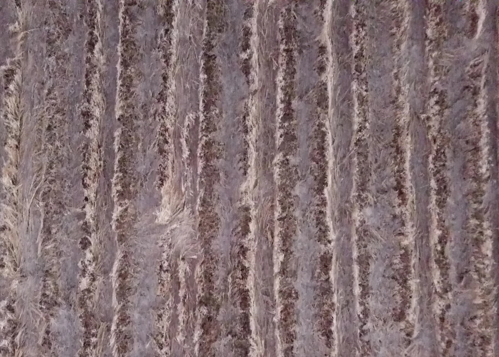
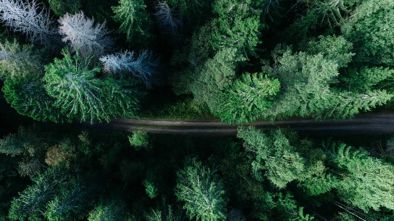
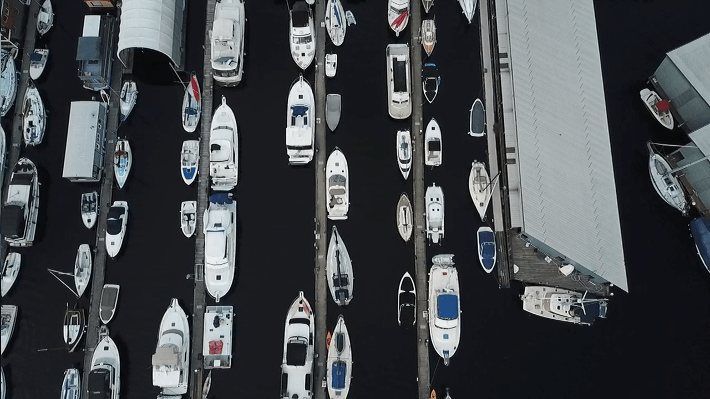
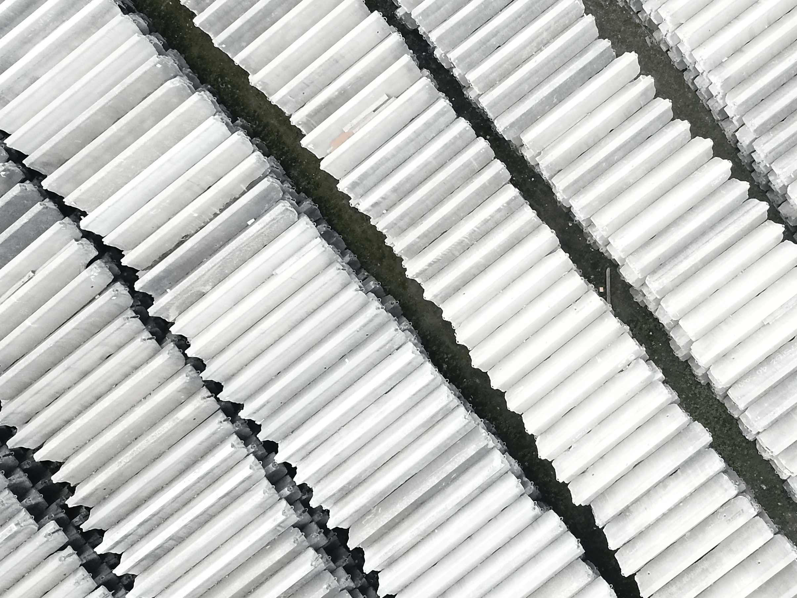
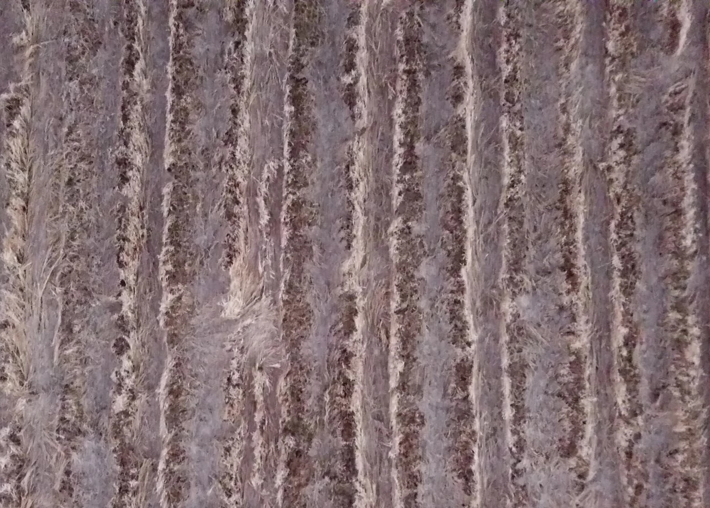
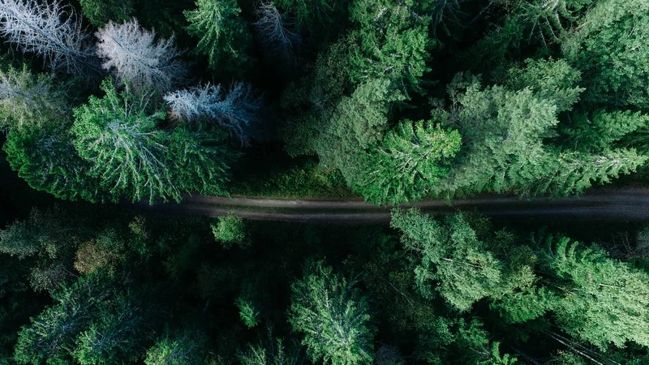
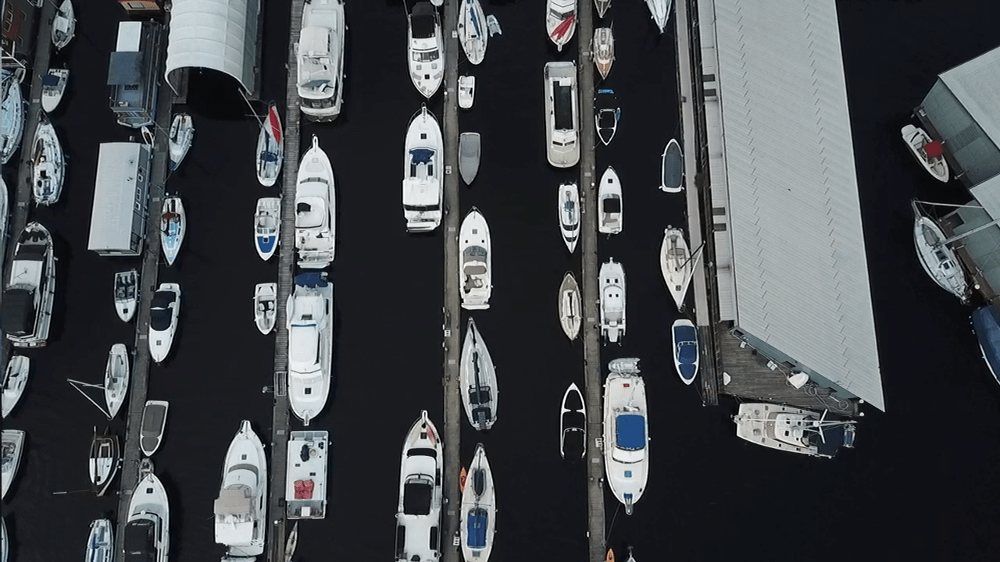
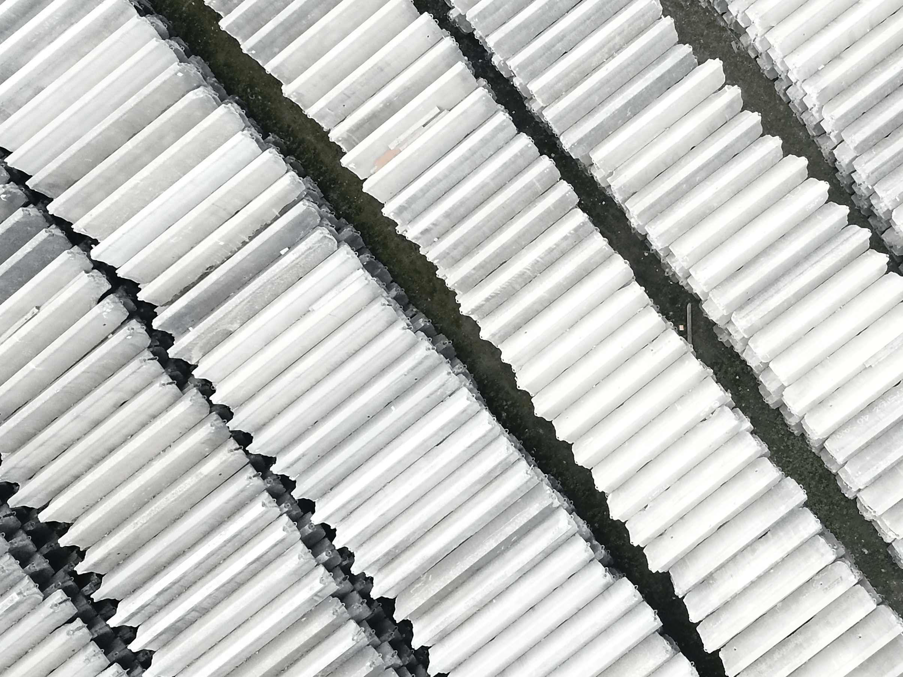

Web
sites
Portraying a Mission
I tell an organization's story through a website's layout, colors, and content, making sure every little detail is perfect.
Vid
Capturing the Moment
Film is music for your eyes. Every shot I take is pieced together, choregraphed, and composed into a story.
eos
Pict
ures
The Personality of the Piece
Acting as a perfect B-roll for my stories, these compositions incresase the nuance of a piece.
I want to create at USC.
-Jack Shewchuk
-Jack Shewchuk